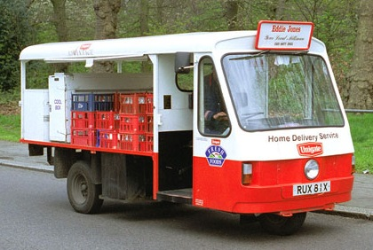

The irresistable rise of electric and driverless vehicles
Thinking back to 2002 when I started writing these columns, it astonishes me how many news stories and other items I've come across, just in the last few months, that would have made little sense to me back then, a mere 15 years or so ago! In the November newsletter [of our Thames Valley Group] alone, there was mention of the DSG twin-clutch automatic gearbox, which first appeared in 2003 (and I love it on my Golf) - and of stop-start systems, which automatically cut and restart the engine as needed, when you're in a queue.
I'm not sure I would want to have one of the latter on my car. When I hear such a restart, it sounds exactly as if the driver had stalled the engine accidentally. And it must require an extra-robust battery and starter. Though I believe that recent Mazda cars get round this problem by simply firing whichever one of the cylinders has paused in the right position (in its four-stroke cycle) to kick-start the engine. Now that, I think, is rather clever!
Then last month it was reported that electric cars are becoming cheaper to buy and run than petrol and diesel models (calculated over a four-year ownership period, and allowing for all costs and subsidies). In 2002 I don't think I had any awareness of electric road vehicles other than trams and trolley buses - and milk floats, which must be one of the most historic (if not anachronistic) common sights on the roads today.

But in fact electrically powered highway conveyances have been 'in development' for 150 years and more! For most of this time they have lagged far behind the internal-combustion engine in success and popularity. Only in the past 15 years have they really emerged as a serious alternative to it.
The worries about electrics have not gone away, though: the highest range (on a full charge) that I have seen quoted for an 'affordable' car is still only around 150 miles, and I guess that's when driving steadily on level roads and with every accessory turned off. But even in these most favourable conditions the full range would never be available in reality, because who would risk running their battery down to near zero charge? And perversely, if you can't stop yourself from habitually just topping it up, the capacity of the battery will gradually decrease...
Then there's the problem for pedestrians, and especially the poorly sighted, of not being able to hear electric and hybrid vehicles coming. The EU took urgent action on this in 2014, decreeing that new models in these categories must generate artificial sound as soon as next year , and likewise all such cars sold from 2021. So that's all right then - if the plan isn't scuppered here by Brexit. But why didn't the manufacturers see the need for some noise coming, and incorporate it from the start? (And how is it that whispering Rolls Royces etc can be escaping this regulation?)
Anyway, you can bet that intensive research is going on to improve battery performance, and electric cars in general, aimed at ensuring that they eventually outnumber conventionally powered vehicles. Though as their range increases, I don't see an easy solution to the problem of how to fully charge a higher-capacity battery at home overnight if, at the same time, you want to be able to run domestic heaters or kitchen equipment and not blow your main fuse (rated at 60 or 80 A, probably)! Still, public charging points will become much more common. And I wonder how soon reviews of petrol and diesel models will start to include the warning: Be aware of how few filling stations remain, across the country...
I was similarly slow in becoming generally aware of self-driving cars (which for space-saving reasons I like to call autos , remember?): they were certainly not on my columnar radar when I began occupying these pages, though experiments with them started way back in the 1920s. Even in 2011 when I wrote about 'road trains' - radio-linked convoys of auto-lorries that were being envisaged for motorways - I had little idea that around the corner (so to speak) was the prospect of my coming face to face with a car whose occupant might be reading or dozing, and relying on sensors and a computer to avoid me!
Since then I've learnt that the development of autos has been officially laid out in five stages, progressing from Level 1 which encompasses adaptive cruise control and lane-keeping assistance (features available to us today of course), through Level 3 in which the driver can focus on other things but must be able to take control fairly quickly if necessary, to Level 5 where there are no controls, and hence no driver. Currently, experimental autos have mostly attained somewhere between Levels 2 and 3, are being developed by several different companies, and have in total covered millions of road-miles (though not without incident).
But what is the public's view of driverless driving? Quite a number of surveys have been conducted (mostly abroad) in the last few years, with varied conclusions. Taking these in at a glance, I might summarize them by saying that a significant proportion of drivers either wouldn't want to give up hands-on motoring, or are worried about the risk of an auto's system being hacked, or both.
A recent survey in Germany reported that (notably among the young) men "felt less anxiety and more joy" towards autos, whereas women were the opposite. Research last year in the UK suggested that a majority of motorists would not buy one. However, opinions can change - and there's no doubt that the technology will progress further towards Level 5.
What will probably delay the appearance of autos (particularly higher-technology ones) on UK roads are factors other than public opinion, namely laws and regulations, insurance and liability, roads and infrastructure... so says a fascinating report that I've just read, based on consultations with many experts, and which I can recommend to anyone wanting to know more about the likely future of autos in this country.
To find it, google PA Consulting Autonomous, and go for the Autonomous result. Scroll down its page until you see "Download the UK Report". (You will have to provide a few innocuous details about yourself before downloading.) I should mention that what I like to call 'autos', the authors of the report refer to as 'CAVs'. Also, rather confusingly, having first set out the five levels of automation I referred to above, they ignore them and bring in their own five-level scale for assessing progress towards the various goals.
A cartoon at the start nicely illustrates the complexity of introducing autos to public roads. But don't copy my mistake: for quite a while I failed to notice that below this cartoon the report was double-page spread, and that I was reading only the left-hand pages in my (reduced-size) screen window!